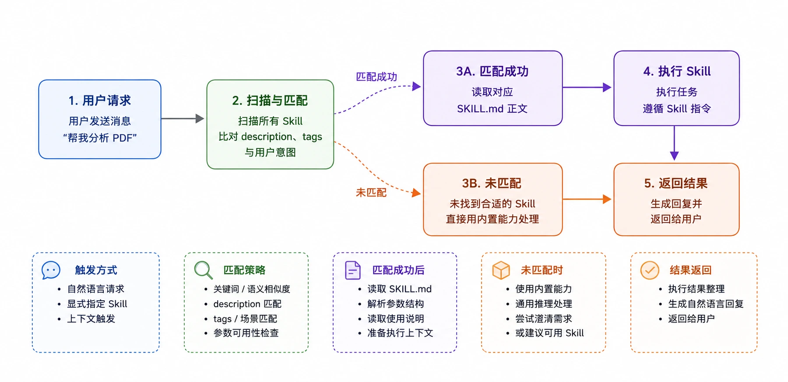

在前面的章节中，我们已经了解了 SKILL.md 的作用，以及 Agent 如何通过渐进式加载使用 Skills。
接下来，我们再研究一个实际开发中经常遇到的问题：
明明已经安装了 Skill，为什么 AI 有时候会使用它，有时候却完全没有反应？
例如，我们创建了一个 PDF 分析 Skill，希望 AI 在处理 PDF 文件时使用这套规范。但实际测试时，Agent 有时直接读取 PDF，有时才会加载我们编写的 Skill。
这种现象通常与 Skill 的描述、任务匹配程度、Agent 的判断以及平台的调用机制有关。
本章节我们将了解 Skills 的自动触发与显式调用方式，学习如何编写更准确的 description，处理多个 Skill 的匹配冲突，并使用测试用例评估触发效果。
什么是 Skills 触发机制
Skills 的触发机制，指的是 Agent 如何根据当前任务判断是否应该加载某个 Skill。
在支持自动发现 Skills 的 Agent 环境中，我们通常不需要每次都明确输入 Skill 名称。
例如，假设我们已经安装了一个负责处理 Excel 的 Skill，只需要提出：
实例：自动匹配 Excel Skill
请分析这份 Excel 销售表。
按月份统计销售额。
找出销售额最高和最低的月份。
最后生成一份简洁的分析报告。
Agent 可以根据任务内容，判断是否需要加载负责表格分析的 Skill。
如果匹配成功，Agent 就会读取对应的 SKILL.md，根据其中的指令规划操作。
随后，如果需要实际读取 Excel 文件，Agent 还可以调用拥有相应权限的文件工具或脚本。
这里需要区分两个动作：
- 触发 Skill：Agent 决定加载并参考某个 Skill 的指令。
- 执行工具：Agent 根据任务需要，调用文件、终端、API 等工具。
触发 Skill 不代表一定会执行脚本，也不代表 Skill 本身就是一个可以独立运行的工具。
Skills 是怎样被自动触发的
根据 Agent Skills 的渐进式加载设计，系统通常先向 Agent 提供可用 Skills 的名称与描述等轻量信息。
当用户提出请求时，Agent 就可以结合这些信息判断哪些 Skills 可能适用。
一个典型的自动触发流程如下：

用户提出任务
↓
Agent 理解需求
↓
查看可用 Skills 的名称与描述
↓
判断是否需要某个 Skill
↓
匹配合适的 Skill
↓
加载完整 SKILL.md
↓
模型根据 Skill 指令规划操作
↓
必要时调用工具或读取资源
↓
工具结果返回 Agent
↓
模型分析、验证并生成回复
实际平台可能提前建立 Skills 清单，也可能通过专门的接口提供 Skill 信息。因此，这个流程不代表 Agent 每次提问时都重新遍历全部 Skill 文件夹。
name 和 description 分别负责什么
我们先来看一个简单的 SKILL.md。
实例：PDF 分析 Skill 的元数据
---
name: pdf-analyzer
description: >
读取和分析 PDF 文档，
提取文本与表格，
生成带有来源信息的中文摘要。
当用户需要总结 PDF、提取 PDF 内容、
分析 PDF 报告或整理 PDF 表格时使用。
---
# PDF Analyzer
按照用户要求处理 PDF 文件。
优先检查文件是否存在。
根据任务需要提取正文或表格。
不得编造文件中不存在的信息。
其中：
| 字段 |
作用 |
示例 |
name |
提供 Skill 的名称与标识 |
pdf-analyzer |
description |
说明 Skill 能做什么、什么时候适合使用 |
读取、分析和总结 PDF |
| Markdown 正文 |
提供加载后的具体工作流程与约束 |
文件检查、文本提取、摘要要求 |
在常见的自动触发机制中，description 是 Agent 判断 Skill 相关性的重要依据。
而 SKILL.md 的完整正文，通常在 Skill 被选中后才加载。
因此，我们不能只把使用条件写在正文里，却让 description 保持模糊。
触发不是简单的关键词匹配
假设我们的 description 写了：
实例：Skill 描述
description
: >
分析 Excel 和 CSV 数据，
生成统计报告与图表。
当用户需要整理电子表格、
统计销售数据或分析报表时使用。
即使用户没有直接说出"Excel"这个词，而是提出：
帮我把过去十二个月的订单整理一下，找出销售额变化明显的月份。
Agent 仍然可能根据任务语义匹配到这个 Skill。
反过来，即使问题包含"Excel"关键词，也不一定需要加载它。
例如：
Excel 这个词的英文全称是什么？
这是一个简单知识问答，并不需要调用表格处理流程。
因此，触发机制更接近根据任务意图判断相关性，而不是简单地检查用户有没有输入某个固定词语。
自动触发与显式调用有什么区别
Skills 不只有自动匹配一种使用方式。
在支持显式调用的平台中，我们也可以通过 Skill 名称或平台提供的操作入口，明确指定要使用某个 Skill。
自动触发
我们只描述需要完成的任务，由 Agent 判断是否加载相关 Skill。
实例：自动触发
请帮我分析这份 PDF。
提取主要观点，
按照章节生成摘要，
并标注对应页码。
显式调用
我们也可以明确告诉 Agent，希望使用已经安装的指定 Skill。
实例：指定使用某个 Skill
请使用已安装的 pdf-analyzer Skill
处理这份 PDF。
按照 Skill 定义的流程提取内容，
最后生成中文摘要。
这是一种自然语言指定方式。是否真正调用到对应 Skill，取决于 Agent 是否能够识别该名称以及当前平台的调用机制。
某些平台还支持通过命令、斜杠指令或专门的 Skill 选择入口进行显式调用，其具体格式应以平台文档为准。
两种方式如何选择
| 方式 |
特点 |
适用场景 |
| 自动触发 |
根据用户任务和 Skill 描述判断 |
日常对话、多个 Skills 协作 |
| 显式调用 |
由用户指定目标 Skill |
测试 Skill、固定工作流程 |
当我们准备测试一个新写的 Skill 时，可以先尝试显式调用，确认它本身的工作流程是否正常，再测试自动触发是否准确。
这样可以帮助我们区分两个问题：到底是 Skill 没有被选中，还是 Skill 被选中后执行出现了问题。
什么样的任务容易触发 Skill
Skill 是否被触发，通常与任务相关性、专业程度、现有工具能力和平台规则有关。
下面我们继续以 PDF Skill 为例。
| 用户请求 |
可能的触发情况 |
原因 |
| PDF 是什么格式？ |
通常不需要 |
普通知识问答 |
| 读取这个 PDF |
可能直接使用文件工具 |
任务比较简单 |
| 总结 PDF 的主要观点并标注页码 |
较适合触发 |
需要文档分析和来源整理规范 |
| 提取多个 PDF 的表格并合并为 Excel |
较适合触发 |
涉及多个步骤与文件处理规则 |
| 合并 PDF 并添加水印 |
取决于已安装 Skill |
需要匹配包含 PDF 编辑能力的 Skill |
| 生成符合公司模板的报告 |
可能触发报告模板 Skill |
需要特定格式和资源 |
表格中的判断只是常见倾向，并非固定的触发结果。
同样的请求，在不同 Agent 平台、模型版本和 Skills 配置下，可能出现不同的选择。
任务复杂度不是唯一条件
复杂任务通常更容易体现 Skill 的价值，但这不意味着简单任务永远不会触发 Skill。
例如，我们定义了一个专门控制公司品牌配色的 Skill。
即使用户只是要求"生成一个按钮"，如果任务明确处于需要遵守品牌规范的设计流程中，这个 Skill 仍然可能适用。
反过来，一个很复杂的任务，如果没有任何可用 Skill 与之匹配，Agent 也不应该为了使用 Skill 而强行选择不相关的能力。
所以，我们设计 description 时，应该优先描述任务目标与适用条件，而不是单纯强调任务必须很复杂。
Description 为什么这么重要
description 可以理解为 Skill 对 Agent 提供的能力说明。
如果描述过于简单，Agent 就可能不知道这个 Skill 适合什么任务。
如果描述过于宽泛，又可能让 Agent 在不需要时错误加载。
描述过于宽泛
不推荐：模糊的 description
description
: 处理文件和数据。
这里没有说明处理哪些格式，也没有明确具体任务。
Agent 很难区分它与 PDF、Excel、代码处理等其他 Skills 的关系。
描述更加明确
推荐：明确能力与适用场景
description
: >
分析 Excel 和 CSV 表格，
支持数据清洗、字段统计、
多表合并与图表生成。
当用户需要整理销售数据、
分析电子表格或生成数据报表时使用。
不用于 PDF 阅读和图片编辑。
第二种写法包含了具体功能、应用场景和不适用范围，更有利于 Agent 做出选择。
推荐的 description 结构
我们可以使用下面的结构编写 description：
核心能力 + 适用任务 + 常见表达 + 不适用范围。
| 组成部分 |
示例 |
| 核心能力 |
分析 Excel 和 CSV 表格 |
| 适用任务 |
数据清洗、统计、合并和图表生成 |
| 常见表达 |
销售报表、电子表格、订单统计 |
| 不适用范围 |
不用于 PDF 编辑和图片生成 |
不是每个 Skill 都需要很长的描述。对于功能边界清楚的任务，几句话就可能足够。
Agent Skills 规范还对 description 设置了长度限制，因此不适合在这里堆积大量无关关键词。
如何优化 Description 的触发效果
接下来，我们介绍几种实用的编写方法。
明确具体使用场景
不要只告诉 Agent 这个 Skill 能做什么，还要说明什么时候应该使用。
实例：Excel 数据分析 Skill
---
name: spreadsheet-analyzer
description: >
读取和分析 Excel、XLSX、CSV 表格数据。
支持数据清洗、汇总统计、异常检查、
多表合并和图表生成。
当用户要求分析电子表格、
统计销售数据或制作数据报表时使用。
---
# Spreadsheet Analyzer
检查输入文件和字段。
根据任务要求处理表格。
对统计结果进行验证。
输出报告时保留数据来源。
这个描述同时包含文件格式和用户可能提出的实际任务。
使用明确的触发指令
在某些 Agent 环境中，使用更明确的指令式描述，可以帮助 Agent 判断适用场景。
例如：
实例：演示文稿 Skill
description
: >
用于创建、编辑和整理 PowerPoint 演示文稿。
当用户需要制作 PPT、幻灯片、
项目汇报、演示材料或 .
pptx 文件时使用。
即使用户没有明确提到 PPTX 扩展名，
只要目标是生成演示文稿，也适用此 Skill。
这种描述比"制作 PPT"更能覆盖真实用户的表达方式。
不过，我们不应认为加入"必须使用"就能强制 Agent 触发。最终是否加载，仍受到平台规则、任务上下文和可用能力的影响。
使用自然的同义词与关键词
用户不一定使用我们在 Skill 名称中写的专业术语。
例如，一个代码审查 Skill，用户可能会提出：
- 帮我做一次 Code Review。
- 检查这段代码有没有 Bug。
- 看看这个函数有没有安全问题。
- 这段代码还能怎么重构？
- 帮我分析项目的代码质量。
我们可以在 description 中自然地覆盖这些表达。
实例：代码审查 Skill
description
: >
对代码进行审查与质量分析，
检查潜在 Bug、可维护性问题、
安全风险和重构机会。
当用户要求 Code Review、
代码检查、Bug 排查、
代码质量评估或重构建议时使用。
关键词的作用是补充任务语义，不是越多越好。
如果把"网页、图片、数据库、视频、办公、编程"等全部塞进一个 description，反而可能导致多个 Skills 的适用范围难以区分。
说明不适用场景
对于功能容易重叠的 Skills，我们还可以明确说明边界。
例如，一个只负责读取 PDF 的 Skill，不应该因为用户提到了 PDF，就自动接管 PDF 合并、水印处理等任务。
实例：限定 PDF Skill 的范围
description
: >
读取 PDF 内容，提取文字与表格，
并根据文档生成摘要或分析报告。
适用于 PDF 阅读和信息提取。
不负责 PDF 合并、加密、水印或页面编辑。
这样的描述可以让我们更容易维护多个专业 Skills。
多个 Skills 同时匹配怎么办
如果我们安装了多个能力相近的 Skills，就可能出现匹配冲突。
例如：
实例：多个 PDF Skills
pdf-reader
读取 PDF 内容
pdf-editor
合并、拆分和修改 PDF
document-report
根据文档生成正式报告
当用户提出"分析 PDF 并生成一份正式报告"时，这个任务可能同时涉及 pdf-reader 和 document-report。
Agent 可能选择一个主要 Skill，也可能按照任务需要组合多个 Skills，具体取决于平台的机制和任务约束。
因此，不能认为多个 Skills 同时匹配时，Agent 一定只会选择其中一个。
如何减少 Skill 冲突
| 冲突情况 |
处理方式 |
| 多个 Skills 都声称能够处理 PDF |
根据读取、编辑、生成报告等操作划分边界 |
| 通用 Skill 与专业 Skill 重叠 |
明确专业 Skill 的适用条件 |
| 两个 Skills 的功能几乎相同 |
评估是否需要合并 |
| 某项任务需要多种能力 |
允许在适当情况下组合多个 Skills |
| 不同 Skills 的规则冲突 |
遵循平台指令优先级并明确操作范围 |
实例：区分两个 PDF Skills
假设我们同时维护 PDF 阅读和 PDF 编辑两个 Skills。
实例：pdf-reader
description
: >
读取 PDF 文本与表格，
提取主要内容、生成摘要、
识别章节和定位信息。
当用户需要分析或总结 PDF 时使用。
不用于修改 PDF 页面和文件结构。
实例：pdf-editor
description
: >
修改 PDF 文件结构，
支持合并、拆分、页面旋转、
加水印和重新导出。
当用户需要编辑 PDF 文件时使用。
不用于普通文档摘要和内容分析。
现在两个 Skills 的任务边界更加清楚。
当我们提出"把三个 PDF 合并成一个文件"时，编辑类 Skill 更适合。
当我们提出"总结这份 PDF 的主要观点"时，阅读类 Skill 更适合。
如果我们需要"先合并三个 PDF，再生成摘要"，Agent 则可能需要两个能力配合完成。
如何判断 Skill 是否成功触发
当我们测试 Skill 时，不能只看 AI 最终回答得是否正确。
因为即使没有加载 Skill，模型也可能凭借已有能力完成某些任务。
如果要评估触发机制，我们需要尽量区分：
- Agent 是否选择了指定 Skill。
- Agent 是否实际加载了 SKILL.md。
- Agent 是否遵循 Skill 的主要工作规范。
- 必要的工具是否成功调用。
- 最终结果是否满足任务要求。
这些是不同的检查项目。
如果平台能够提供工具调用记录、Skill 加载事件或执行日志，我们可以使用这些信息进行判断。
不能仅凭最终答案中出现了"我使用了某个 Skill"就认为它真的被加载。
触发测试与执行测试的区别
| 测试类型 |
主要目标 |
检查内容 |
| 触发测试 |
是否选择了正确 Skill |
该触发时触发，不该触发时不触发 |
| 执行测试 |
加载 Skill 后能否完成任务 |
脚本、流程、权限和异常处理 |
| 结果测试 |
最终输出是否符合要求 |
内容准确性、格式和来源 |
设计一组 Skill 触发测试用例
我们以 pdf-analyzer 为例，准备一组应该触发和不应该触发的任务。
测试时，最好同时包含明确任务、边界任务和容易误判的任务。
正向测试
这些任务符合 PDF 分析 Skill 的使用范围。
| 测试请求 | 预期 |
|---|
| 帮我总结上传的 PDF 研究报告 |
应该触发 |
| 提取合同 PDF 中的主要条款 |
应该触发 |
| 读取 PDF 中的表格并整理成摘要 |
应该触发 |
| 分析这份 PDF 中各章节的重点内容 |
应该触发 |
反向测试
这些任务不属于 PDF 内容分析范围，或者应当使用其他能力。
| 测试请求 | 预期 |
|---|
| 请把三个 PDF 合并成一个文件 |
不应触发 PDF 分析 Skill |
| 给这个 PDF 加上公司水印 |
不应触发 PDF 分析 Skill |
| PDF 和 DOCX 有什么区别？ |
通常不需要 PDF 分析 Skill |
| 帮我重新设计 PDF 封面 |
不应触发 PDF 内容分析 Skill |
这里的"应该触发"表示我们为测试制定的预期标签，不代表任何平台都保证产生相同结果。
为什么反向测试很重要
假设我们只测试"帮我总结 PDF"，而 Skill 每次都成功触发。
这并不能说明 description 写得足够好。
如果用户提出"帮我合并 PDF"，同一个 Skill 也被触发，说明它的触发范围可能过宽。
因此，我们不能只追求触发率，也需要减少错误触发。
使用 JSON 保存触发测试集
如果我们希望自动测试，可以把测试请求保存为 JSON 文件。
下面采用 Anthropic skill-creator 描述优化工具所使用的常见测试结构。
实例：trigger-eval.json
[
{
"query": "请总结这份 PDF 研究报告的主要观点",
"should_trigger": true
},
{
"query": "提取合同 PDF 中的主要条款",
"should_trigger": true
},
{
"query": "读取 PDF 中的表格并生成摘要",
"should_trigger": true
},
{
"query": "请把三个 PDF 合并成一个文件",
"should_trigger": false
},
{
"query": "给这个 PDF 添加公司水印",
"should_trigger": false
},
{
"query": "PDF 和 DOCX 有什么区别？",
"should_trigger": false
}
]
其中：
query：测试时发送的用户请求。should_trigger：表示我们期望该 Skill 是否被触发。
正式测试时，我们还应该增加更多真实场景，比如用户使用模糊表达、多个 Skill 可能同时匹配，以及涉及专业操作但没有明确提到文件格式的任务。
测试集越贴近真实用户的使用方式，越有利于发现 description 的问题。
如何评价 Skill 的触发准确性
如果我们准备了多条测试请求，就可以记录实际触发结果，并与预期标签进行比较。
常见的评估指标包括：
| 指标 |
说明 |
| Precision（精确率） |
实际触发的请求中，有多少是应该触发的 |
| Recall（召回率） |
所有应该触发的请求中，有多少成功触发 |
| False Positive（误触发） |
不应该触发，却错误触发 |
| False Negative（漏触发） |
应该触发，却没有触发 |
例如，我们准备了十条应该触发的测试请求，其中八条成功触发，那么这组测试的召回率就是 80%。
但这还不能说明 Skill 的整体表现。
如果大量不相关的任务也会触发，我们还需要改进精确率。
理想的 description 不是触发得越多越好，而是该使用时能够使用，不适用时尽量避免误触发。
使用 skill-creator 优化 Description
Anthropic 的 skill-creator 提供了用于创建、测试和改进 Skills 的相关工具。
在支持对应脚本的版本中，我们可以使用 description 优化流程，根据测试请求评估触发情况，并尝试改进描述。
需要注意，这不是 Agent Skills 规范要求的通用命令，而是特定 skill-creator 实现中的辅助工具。
准备运行环境
我们需要具备：
- 支持该流程的 skill-creator 项目文件。
- Python 运行环境。
- 可以运行的 Claude Code CLI。
- 用于测试的 Skill 目录。
- 包含正向和反向请求的 JSON 测试集。
不同版本的脚本和依赖可能有所变化，我们应先查看当前安装版本的说明。
运行 description 优化
假设我们已经在对应版本的 skill-creator 项目根目录中，并且脚本可以通过 Python 模块方式调用。
可以使用：
实例：触发描述优化
python
-m scripts.run_loop \
--eval-set /path
/to
/trigger-eval.json \
--skill-path /path
/to
/pdf-analyzer \
--model YOUR_AVAILABLE_MODEL_ID \
--max-iterations 5 \
--verbose
这里的 YOUR_AVAILABLE_MODEL_ID 需要替换为当前 Claude Code 环境中实际可用、适合进行测试的模型标识。
参数说明：
| 参数 | 作用 |
|---|
--eval-set |
指定触发测试集 JSON 文件 |
--skill-path |
指定需要优化的 Skill 目录 |
--model |
指定评估和改进使用的模型 |
--max-iterations |
设置最大优化迭代次数 |
--verbose |
显示更详细的运行日志 |
这个优化流程通常会运行触发测试、记录结果、生成候选 description，再对候选版本进行比较。
部分实现还会将测试集拆分为训练与保留测试两部分，避免仅针对已经看到的测试请求过度优化。
它的运行可能需要多次模型调用，因此需要考虑调用额度与成本。
优化后需要检查什么
即使工具给出了分数更高的 description，我们也不应该直接认为它一定适合正式使用。
还需要检查：
- 是否保留了 Skill 原本的实际能力范围。
- 是否加入了不具备的功能。
- 是否因为过度强调触发而扩大了适用范围。
- 是否对相近 Skill 产生新的匹配冲突。
- 是否在未参与优化的测试请求中表现正常。
如果修改 description 后，某些旧任务不再正确触发，我们可以继续调整，或者恢复上一个稳定版本。
更多关于 description 的编写方法，可以继续阅读 Skills 描述优化技巧。
Skill 没有触发时，我们应该检查什么
如果我们已经创建了 Skill，但 Agent 没有自动加载，可以按以下方向排查。
| 检查项目 |
可能的问题 |
处理方式 |
| 安装位置 |
Agent 没有发现 Skill |
检查对应平台的安装路径或注册方式 |
| SKILL.md 格式 |
Frontmatter 格式错误 |
检查 name、description 和 YAML 语法 |
| description 内容 |
适用场景描述过于模糊 |
补充真实任务场景 |
| 任务相关性 |
用户请求与 Skill 不匹配 |
确认 Skill 是否真的适合 |
| 匹配冲突 |
多个 Skills 功能重叠 |
明确各自边界 |
| 平台策略 |
平台对 Skill 激活存在限制 |
查看对应平台说明 |
| 执行能力 |
Skill 已触发，但缺少工具权限 |
检查 Agent 可用工具与授权 |
先确认 Skill 是否被发现
我们可以先查看 Agent 是否能够识别已安装的 Skill。
如果系统根本没有发现它，那么继续优化 description 通常也无法解决问题。
再确认 Skill 是否能够显式使用
如果平台支持显式调用，我们可以指定这个 Skill，检查它是否能正常加载。
如果显式调用成功，但自动触发不稳定，才更适合重点检查 description 和任务匹配规则。
最后检查执行环境
如果 Skill 已经加载，但脚本无法运行，问题可能出在文件权限、依赖或工具接口，而不是触发机制。
例如，PDF 分析 Skill 已经被选中，但 Python 环境没有安装 pypdf，就可能导致文本提取失败。
这属于执行问题，需要与触发问题分开处理。
动手练习
优化一个 PDF Skill
我们可以先编写一个简单的 PDF 分析 Skill，只包含名称、描述和基础操作规则。
然后准备四条应该触发的请求，以及四条不应该触发的请求。
测试后，根据实际结果调整 description。
比较两种 description
为同一个 Excel Skill 准备两个版本。
一个只写"处理 Excel 文件"，另一个明确说明数据清洗、统计、图表生成等任务。
使用同一组测试请求进行比较，观察实际触发结果。
测试多个 Skills 的匹配冲突
我们可以准备 pdf-reader 和 pdf-editor 两个 Skills。
分别提交 PDF 摘要、PDF 合并和 PDF 水印处理任务，检查 Agent 是否选择了适当的能力。
测试显式调用与自动触发
先尝试明确指定某个 Skill，确认它是否能够正常执行。
再使用普通自然语言提出相同任务，观察是否能够自动匹配。
通过这种方式，我们能够更清楚地区分 Skill 触发问题和 Skill 执行问题。